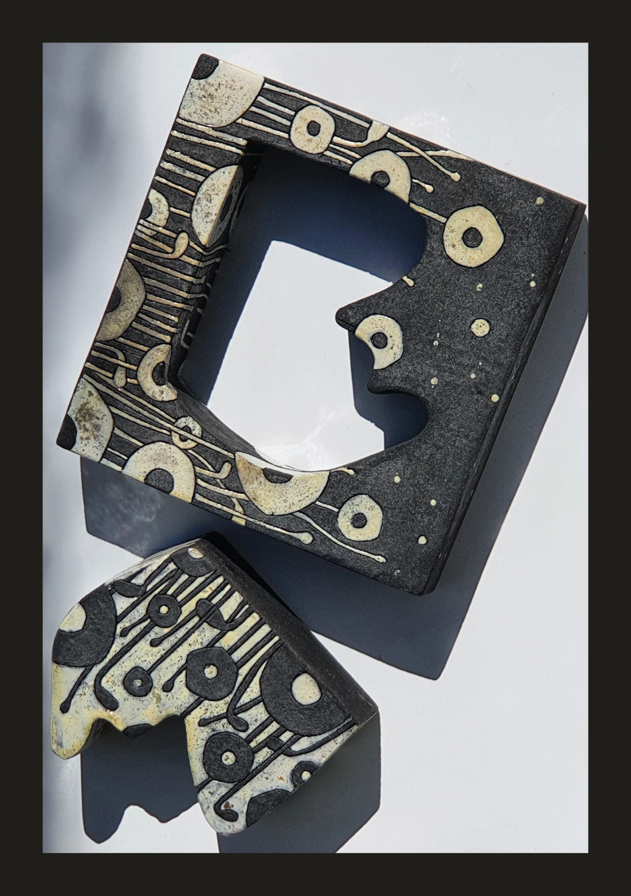
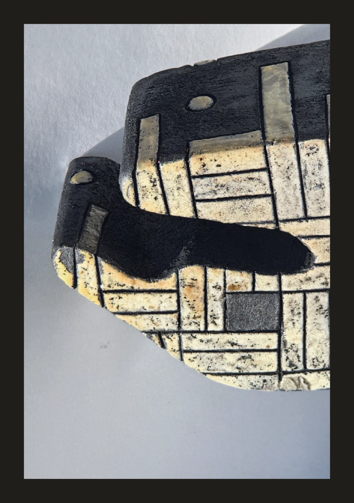
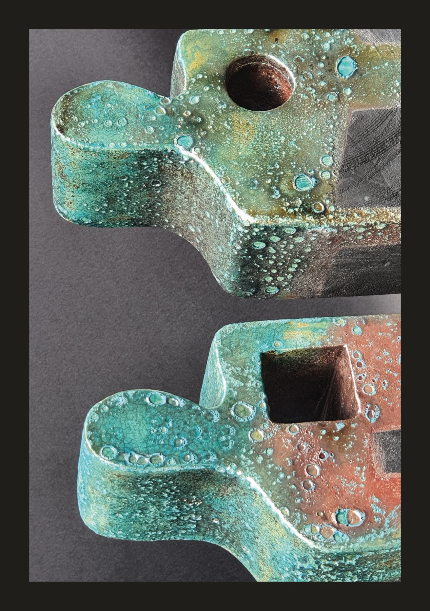

KRYSTYNA MISHCHENKOПРИСУТСТВИЕ

ПРИСУТСТВИЕ
ФОРМЫ.
ВАРИАНТ 02
ТЁМНЫЙ МУЗЕЙ
Спокойная симметрия. Одна работа на первом экране, широкие поля, последовательное знакомство с коллекцией.
Открыть полную версию ↗KRYSTYNA MISHCHENKOФОРМА
ФОРМА
В ПРОСТРАНСТВЕ.


ВАРИАНТ 06
НОЧНАЯ ЭКСПОЗИЦИЯ
Глубокий зелёный фон. Горизонтальный просмотр работ, переходы между направлениями и ритм выставочного зала.
Открыть полную версию ↗
KRYSTYNA MISHCHENKOПОЧУВСТВОВАТЬ
ПОЧУВСТВОВАТЬ
МАТЕРИАЛ.
ВАРИАНТ 08
КИНЕМАТОГРАФИЧНЫЙ
Крупный фрагмент фактуры на входе. Асимметричная галерея и выразительные переходы между разделами.
Открыть полную версию ↗